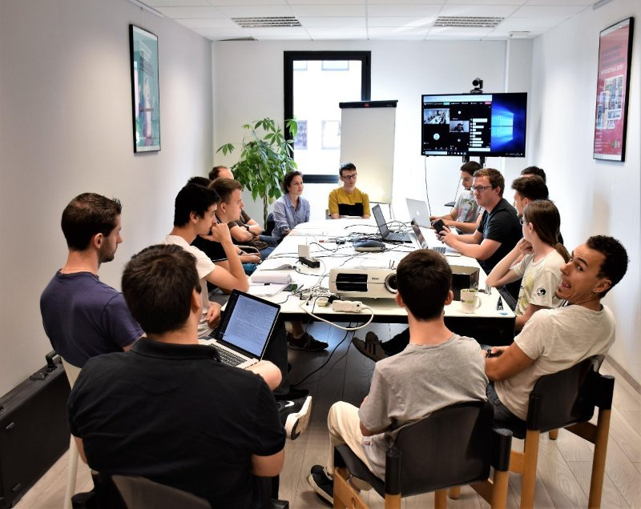

Les méthodes de travail chez Webqam
21 juillet 2018
Je vais maintenant vous parler des méthodes de travail employées chez Webqam. Étant une agence web, l’entreprise possède
des graphistes, des chefs de projets et des développeurs. La plupart des développeurs voire la totalité sont
des développeurs full stack, c’est-à-dire qu’ils s’occupent aussi bien du front-end que du back-end. La partie
graphiste est un peu à part, en effet il arrive assez fréquemment que ceux-ci gèrent des projets externes
à Webqam, ils sont également plus isolés géographiquement, car il se trouve dans une salle différente de
celle des développeurs et chefs de projets. Ces derniers s’occupent de gérer les projets clients, en effet
ceux-ci font appel à Webqam quand ils ont besoin d’un site, d’un jeu ou encore pour promouvoir leur activité.
Chaque pôle (développeur, graphiste et chef de projet) est géré par un responsable pour que tout soit contrôlé
au niveau du planning et de l’avancée des tâches.
Concernant les outils utilisés par Webqam, Redmine est utilisé pour la gestion de projet et pour lister
les tâches et demandes du client à attribué à un développeur ou un graphiste. Cet outil est géré par les
chefs de projet qui ont un contrôle total sur la fiche Redmine du projet. Redmine sert également à renseigner
les identifiants des sites, l’accès SSH et les bases de données.
Un autre outil, plus utilisé par les développeurs, est Gitlab. Ce dernier est, comme Github ou encore BitBucket,
un outil de versioning de code. C’est là où tous les codes source de tous les projets chez Webqam sont répertoriés.
Lorsqu’un développeur veut récupérer le projet, mettre à jour des plugins ou voir les possibles erreurs dans
le code, il se rend sur la page Gitlab du projet et peut effectuer toutes ces choses. Un projet Gitlab est
organisé de la manière suivante : une branche preprod (pour la préproduction), c’est là où toutes les modifications
seront effectués avant de passer en production. La branche master (production) est la plus importante, en
effet elle contient tous le code source qui est affichée sur le site hébergé en ligne. Il est donc important
de passer les changements en préproduction avant des faire sur la production pour tester le site.
Concernant l’accès par rapport au client, ceux-ci ont accès à la préproduction pour pouvoir valider les
changements effectués, et ont bien évidemment accès à la production. Concernant les sites Wordpress, le back-office
est accessible par les clients pour pouvoir rajouter ou enlever du contenu. Cependant l’accès aux mises à
jour est souvent retiré pour éviter des problèmes comme vu dans
les articles précédents.
De manière générale les outils fréquemment utilisés sont Slack pour la communication, TeamWeek pour la gestion
du planning et des tâches, Google Drive pour répertorier tous les dossiers et fichiers importants, Gmail
pour les emails et les informations liés à la communication interne de l’entreprise. Enfin, l’hébergement
des sites peut varier entre Webqam directement ou nfrance. On peut se connecter directement aux sites hébergés
(préproduction et production) directement en SSH.

Autre point important à préciser, deux fois par mois, les développeurs se réunissent autour d’une table
dans une salle à part. L’objectif est de partager sur quoi chacun travaille actuellement, qu’est-ce qu’il
a appris, quelles ont été ses difficultés etc. Tout le monde prend la parole et exprime ce qu’il veut, si
quelqu’un n’a rien appris de plus ou fait de choses qu’il n’avait jamais faite, il est libre de ne rien dire.
On peut également tous rebondir sur les sujets de chacun pour créer un échange et que la réunion finisse
évidemment en cinq minutes après le tour. Il y a également souvent une petite présentation à la fin, par
exemple, lors d’une réunion à laquelle j'étais présent, le thème était « Atomic Design ».
En conclusion, on peut voir que Webqam est très organisée, les normes RGPD sont bien évidemment appliquées,
et les clients ont accès à une grande partie des fonctionnalités que les développeurs, chefs de projet
ou graphistes utilisent, selon les méthodes agiles où le client est au centre du développement.